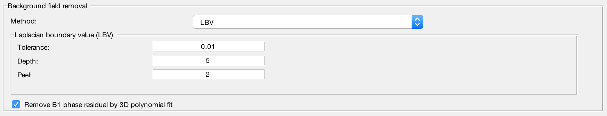

Background Magnetic Field Removal Standalone¶
Why do we need to remove background field?¶
The phase we measured in a GRE acquisition is affected by not only the brain tissue but also sources like B0 inhomogeneity and air sinus. In order to compute the susceptibility sources only contributed by the brain tissue, it is important to remove all the non-local field effect. Fortunately, the characteristic of the local field is different from that of the non-local field, it is possible to separate the two fields from the unwrapped total field. This standalone application is designed to solve the field separation problem.
Caution: It is crucial that the background field contribution is removed accurately in this stage. Otherwise, the remaining field due to background sources will be treated as part of the local field, degrading the quality of QSM result.
Structure of the application¶
This application consists of two panels:
- I/O panel, and
- Background field removal panel.
The detailed description of each panel is given below:
I/O panel¶

Data input
This application accepts two types of data input method:
- Specify a directory that contains all NIfTI images. Please specify the names of your data as in the following:
- Total field data: must contain the string ‘total-field’ in the filename, e.g. total-field.nii.gz;
- Header: must contain the string ‘header’ in the filename, e.g. header.mat;
- (optional) Fieldmap standard deviation data: must contain the string ‘fieldmap-sd’ in the filename, e.g. fieldmap-sd.nii.gz;
- (optional) Mask data: if provided, must contain string ‘mask’ in the filename, e.g. mask.nii.gz, or
- Specify the required data separately using the GUI buttons.
- Specify a directory that contains all NIfTI images. Please specify the names of your data as in the following:
Data output
You can specify the prefix of the data output name in the editable field ‘Output basename’. By default, the Sepia output will be stored in a directory named ‘output’ under the input directory, i.e. ‘/your/input/directory/output/’ with prefix ‘sepia’. You can change the default output directory and basename to whatever you need. If the output directory does not exist, the application will create the directory.
Brain mask
QSM related algorithms often require a mask that contains only brain tissue. If you already have the brain mask data in NIfTI format, you can select the file manually, or named it with a specific name (see Data input section) and put it in the directory with other NIfTI files.
Background field removal panel¶
Method
Laplacian boundary value approach to removal background field
Projection onto dipole field
Regularisation enabled SHARP
Sophisticated harmonic artefact reduction for phase data
STI suite v3.0 variable-kernel SHARP
(not optimised with SEPIA yet)
Refine local field by 4th order 3D polynomial fit
Enable to remove residual B1(+ & -) contribution in the local field
Output
The output of the standalone application is given below:
- local-field.nii.gz (local (or tissue) field, in Hz)
- mask-qsm.nii.gz (brain mask where local field is reliable, might be eroded and depended on the background field removal algorithms and ‘exclude unreliable voxels’ threshold value)